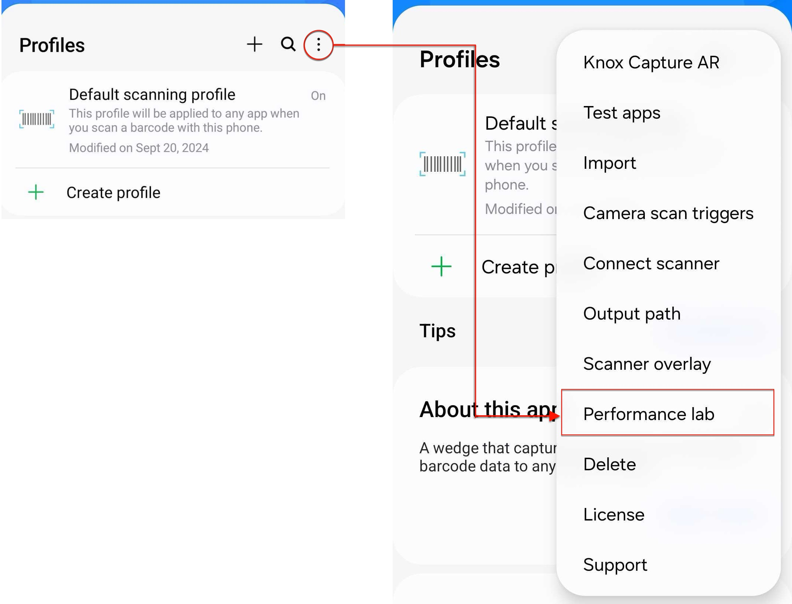

Use Performance lab features
Last updated July 21st, 2025
The Knox Capture Performance lab section lets you enable advanced options to help improve barcode scanning capabilities. To access this section, go to the Knox Capture Home screen > Options button (three vertical dots) > Performance lab.

Performance lab features are experimental and can be removed at any time without notice.
The following feature are currently available in the Performance lab:
Low light toast notifications
Enable this option to show a notification in the capture preview window during low light operations. This notification asks the user to enable their camera flashlight for better scanning results. This feature is ON by default.
Auto camera exposure
Enable this option to have the scanner camera automatically adjust its exposure setting in dark environments. This feature is ON by default.
If Camera settings > Flashlight is set to On/Auto, or if Flashlight was set to Off but the user manually turns it back on, then this feature is disabled.
Auto zoom
Enable this option to have the scanner camera automatically zoom to an optimal distance when a barcode enters the preview window. If the scan is unsuccessful even after automatically zooming in, a notification instructs the user to move closer and try again. This feature is OFF by default.
This feature only works if the scan engine setting is set to Single scan > Barcode selection: Automatic. If Continuing scanning or Scanner overlay is configured, auto zoom will not be applied.
On this page
Is this page helpful?